CS184/284A Spring 2025 Homework 3 Write-Up
Link to webpage: that's me !' Link to GitHub repository: GitHub repo
Overview
Give a high-level overview of what you implemented in this homework. Think about what you've built as a whole. Share your thoughts on what interesting things you've learned from completing the homework.In this homework, I learned how to rasterize 3-D objects and different lighting patterns. I learned the importance of reflection, direction, world to object transforms, and how subtle lighting shifts can create a huge difference in the output. I also implemented some interesting algorithms, like Russian Roulette.
Part 1: Ray Generation and Scene Intersection
To generate rays, we needed to first take the input coordinates and transform them to camera space. After that, it needed to be transformed into world space. This was done through a series of matrix transforms. Implementation of primitive intersects were different for triangle and sphere intersections. For triangle intersections, I used the Möller-Trumbore algorithm to efficiently calculate if the input ray intersected with the triangle. Then, for spheres, I used the formula described in class with the quadratic formula. This allowed me to find the t at which the two intersected, if at all. Using the resulting values, I updated min_t and max_t for each ray in the correct functions.For some reason some of the .dae such as bunny is rendered off the scene (as shown in the image below). We ran out of time to debug it.

Part 2: Bounding Volume Hierarchy
The heuristic I chose for picking the splitting point was along the longest axis. That is, I went through all the primitives and recorded the maximum and minimum x, y, and z values as well as the average of the centroids. Then, I divided the primitives up based on whether or not their centroids or larger than or less than the average value.

|

|
L: timing before. R: timing after
The screenshots show the amount of time it took to render the cow on my local machine before and after implementing the BVH acceleration. You can see that it goes from taking 134 seconds to just 12. The number of average intersection tests goes down as well, indicating that the algorithm is much more efficient.Part 3: Direct Illumination
Direct lighting with uniform hemisphere sampling: we know that the light being reflected from any point to another point is going to be the same. Therefore, I could just sample across the entire hemisphere instead of the individual lights in the scene. I still randomly sampled from the hemisphere, though. I had to add epsilon values to my shadow ray and its min/max values in case of overlap. Then, I checked if the shadow intersected any objects. I accumulated the radiance over all the objects, normalized it using the PDF, and returned the value.
Direct lighting with importance sampling: since this only samples from the lights, it creates less noise as we are not checking where the light does not hit. Using the same reflectance equation as uniform hemisphere sampling, we were able to calculate whether or not a shadow ray intersected with an object in the scene, as well as the total outgoing light. We also used is_delta_light() to check whether or not the light was a point light, and epsilon values to account for overlapping values and potential floating point errors. Finally, we implemented a simple check in one_bounce_radiance to return either hemisphere or importance sampling. We made sure to multiply it by the normalizing factors, like the cosine theta of the ray.
The difference between hemisphere and importance sampling is that the latter produces a much smoother result than hemisphere sampling. The former samples all areas in the hemisphere, which means that it samples areas that the light doesn't hit and creates extra noise. Importance sampling only samples areas that the light hits, weighting it accordingly. Therefore, the result looks nicer.
| 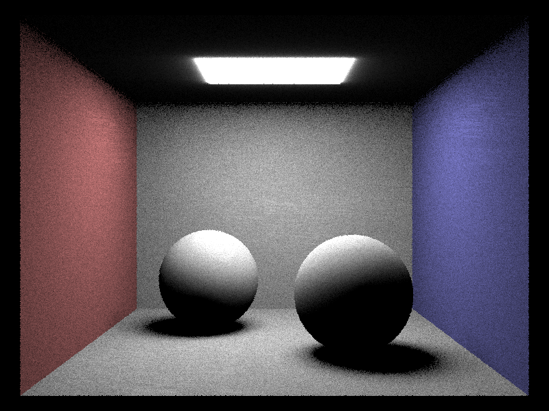 | 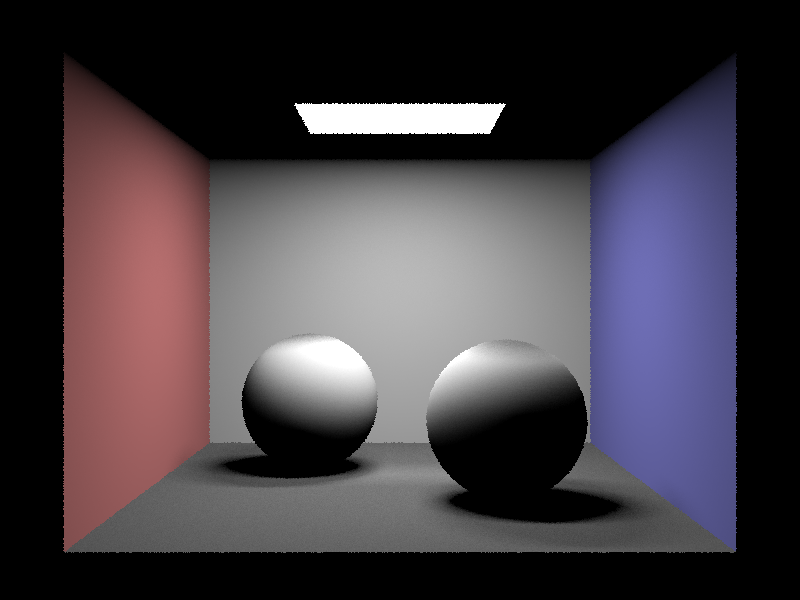 |
| 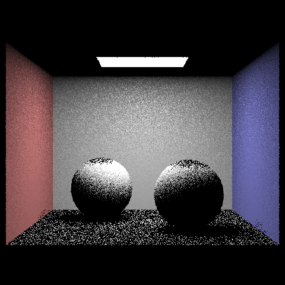 | 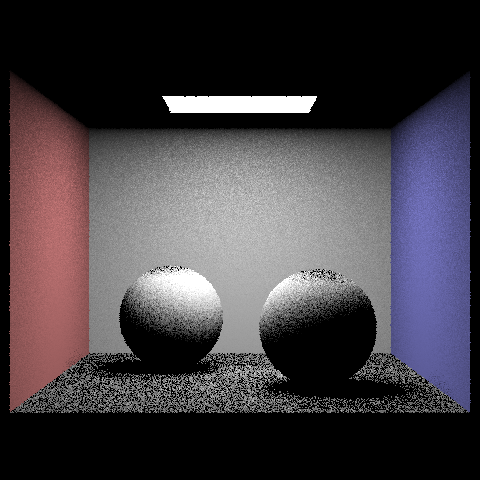 |
| 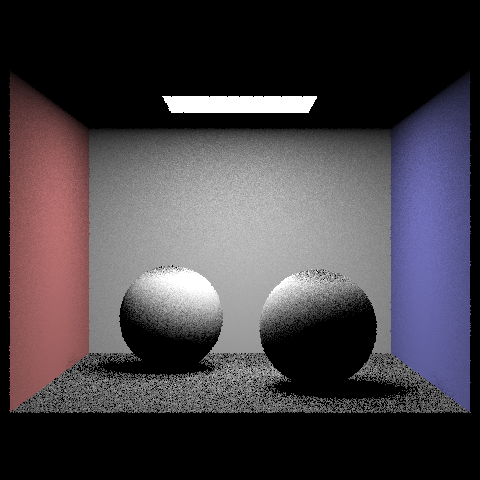 | 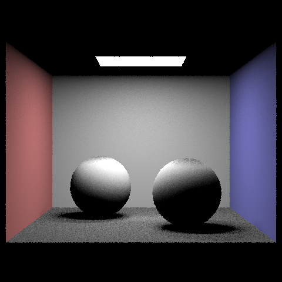 |
TL: 1 ray. TR: 4 rays. BL: 8 rays. BR: 64 rays.
Part 4: Global Illumination
In this part, I implemented sample_f, using the same logic for f as in part 3 (radiance / PI). I also made sure to assign the correct values to wi and pdf. Then, I recursively implemented at_least_one_bounce_radiance(). I had to create a new ray for each iteration based on the previous input ray's direction. I kept track of the number of bounces through the new ray's depth parameter, decrementing it each time I called the function again.
Indirect Lighting Implementation
Our implementation of the indirect lighting function builds upon the path tracing framework, recursively tracing rays to accumulate radiance from multiple bounces. We compute indirect lighting by:
- Sampling an incoming direction using the BSDF.
- Tracing a new ray in the sampled direction.
- Recursively computing radiance contributions until reaching the maximum bounce depth.
- Applying Russian Roulette termination to avoid infinite recursion.


Global Illumination Rendering
| Direct Illumination | Indirect Illumination |
|---|---|
 |
 |
Having max bounces = 2 means that you get a lot of the initial bounce light from your light. This helps create depth in the final rasterized image. On the other hand, max bounces = 3 creates a less obvious effect. Overall, it's darker than max bounces = 2. There's still a sense of what the geometry looks like, though. Both of these create a 3-D effect in the final raster.
At high max bounce levels, the difference between the different images for accumulated light is very minimal. This is because most of the light has dissapated by the time that the 4th or 5th bounce happens. It's only really in the 2nd and 3rd that most of the effect happens.
| 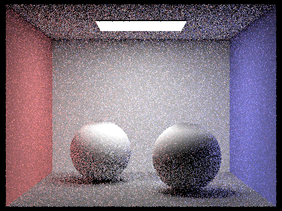 | 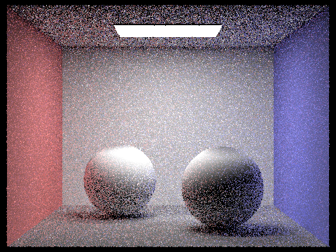 | |
| 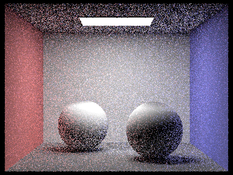 |
Top to bottom, left to right: 0, 1, 2, 3, 4, 5 max_ray_depths Russian Roulette
| 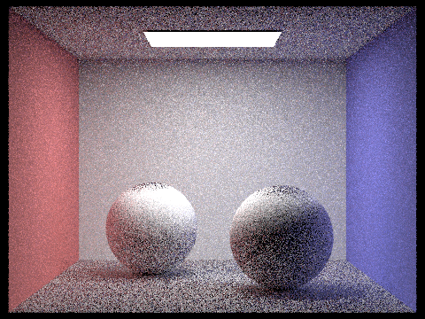 | 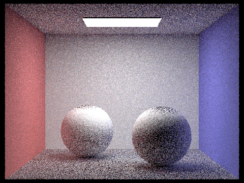 | ||
| 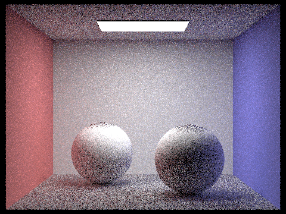 |
Top to bottom, left to right:1, 2, 4, 8, 16, 64, 1024 samples per pixel
Part 5: Adaptive Sampling
Implementing adaptive sampling is fairly simple; I mostly modified pathfinder.cpp and changed how I generated rays. I used modulo to check every samplesPerBatch samples whether or not the criteria for stopping had been reached. In my for loop, I kept a consistent counter of the mean and mean squared so that I could make the necessary standard deviation and inequality checks with respect to I and maxTolerance. Then, if the criteria was met, I threw a break statement to end the for loop.


Note: the grader may notice that this seems a bit incomplete. I defend myself by saying that I spent the majority of the time debugging my partner's ChatGPT generated code. Let this be an additional lesson to myself to not work with people who will do that.